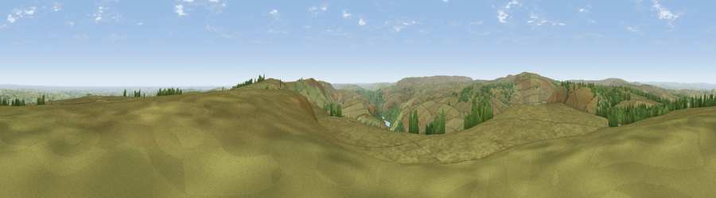

Viewpoint near Upper Midhope
#6163 in England · top 3% of its area beats it · near Upper Midhope · open accessWhere it is
The exact computed spot (SK 17672 96974). Click the marker for map links.
Public access: this spot lies on mapped open-access land (CRoW Act 2000) — you may roam here on foot. Computed from Natural England's CRoW access layer and OpenStreetMap rights of way — not the legal definitive map. Always verify locally.
The view, rendered

A 360° render of this exact spot computed from the terrain model, tree cover and land cover — summer colours, afternoon light, calibrated against photographs of famous viewpoints. Real trees, hedges and buildings will differ in detail.
The panorama
Grey silhouette: terrain skyline in each direction (720 bearings, Earth curvature and refraction included). Dashed green: skyline with trees (+15 m) and buildings (+8 m) as obstacles. Blue strip: how far the ground is visible on each bearing.
Where the view opens
Wedge length = distance to the farthest visible ground on that bearing (vegetation-aware). Rings at 10, 25 and 50 km.
What fills the view
92% grassland · 6% woodland · 1% cropland · 1% built-up
Angular shares of the visible panorama (visual magnitude), not map area. Landscape diversity 0.16 (0–1 Shannon).
Key numbers
More beautiful places nearby
The staircase of upgrades: each row has a higher view potential than everything closer. Driving times are estimates from straight-line distance, calibrated against real road routing — check an actual route before setting out.
| Place | Direction | Drive | Score |
|---|---|---|---|
| High Stones | SSE · 3 km | ~7 min | 70.7 |
| Back Tor | SSE · 6 km | ~13 min | 71.1 |
| Viewpoint c7795_8393 | SSE · 7 km | ~15 min | 71.7 |
| Viewpoint near Thornhill | SSE · 8 km | ~17 min | 74.1 |
| Viewpoint near Wharncliffe Side | E · 14 km | ~25 min | 75.0 |
| Viewpoint near Wharncliffe Side | E · 14 km | ~25 min | 75.2 |
| Viewpoint near Greenfield | WNW · 18 km | ~32 min | 76.0 |
| Viewpoint near Carrbrook | W · 19 km | ~32 min | 77.1 |
53.46921, -1.73525 · source: osm peak · position refined by local search. Computed location — check access rights before visiting.